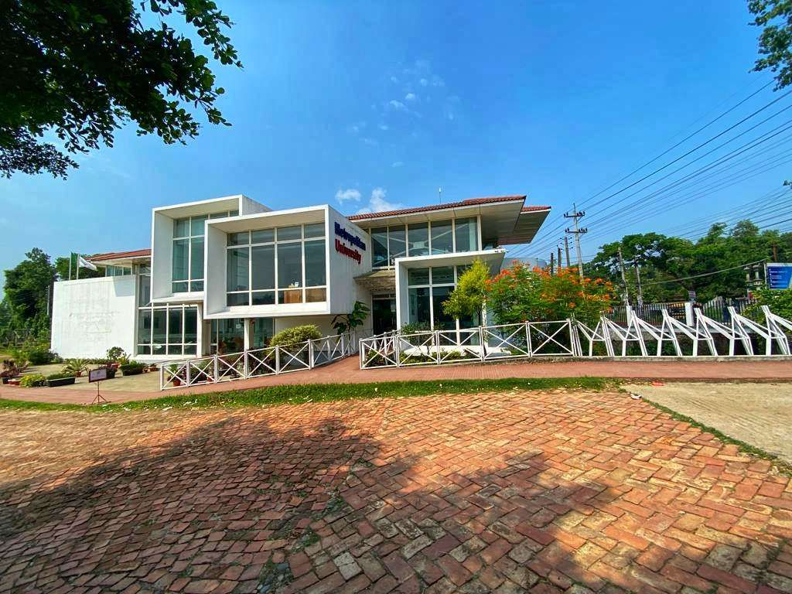

A Legacy of Excellence in the Heart of Sylhet. Established in 2003 by the visionary educationist Dr. Toufique Rahman Chowdhury, Metropolitan University has evolved into a premier seat of higher learning in Bangladesh. Recently achieving the prestigious 'Permanent Charter' from the Government of Bangladesh, MU stands as the first private university in the Sylhet region.
Guided by the motto 'Education, Not Just a Degree,' the university is committed to fostering a research-driven environment across its sprawling permanent campus in Bateshwar. With a community of over 6,000 students and a legacy of producing global leaders now working at tech giants like Google and Amazon, MU continues to bridge the gap between academic theory and industry innovation.As we look toward the future, the university remains dedicated to providing a transformative educational experience that prepares students for the challenges of the 4th Industrial Revolution. Our graduates are not just degree holders; they are innovators and problem-solvers ready to make a global impact.